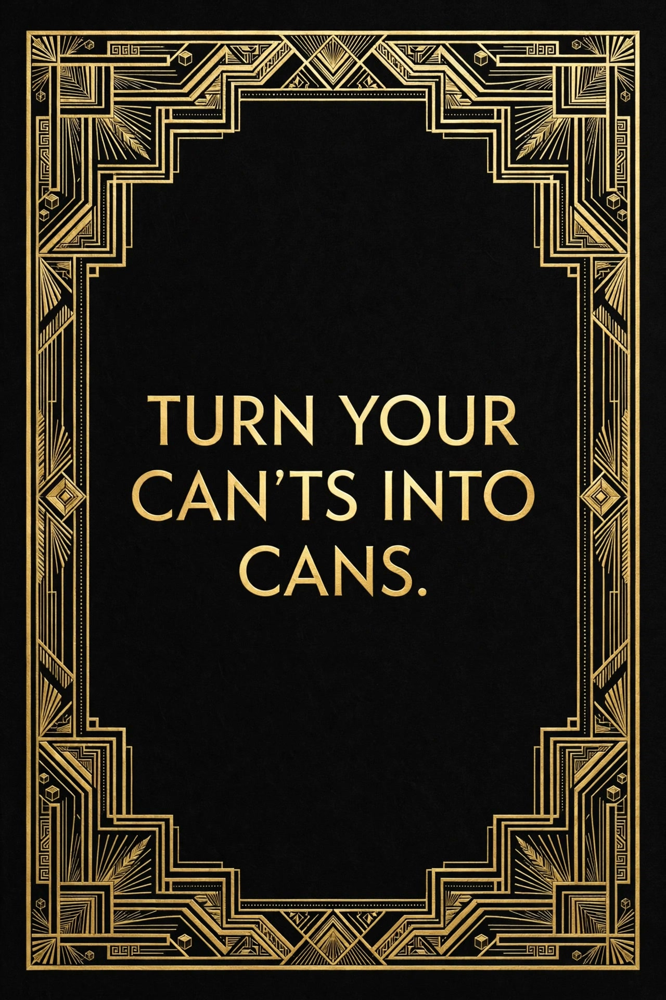
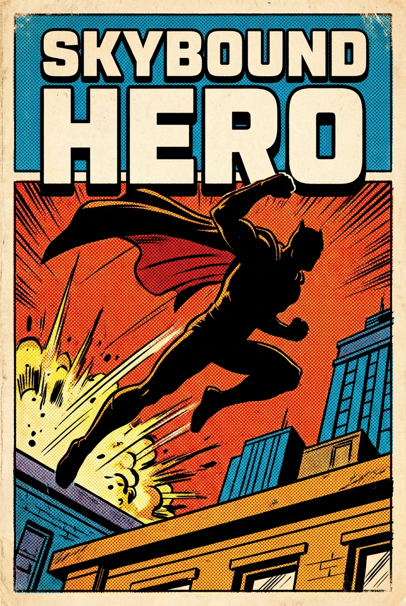
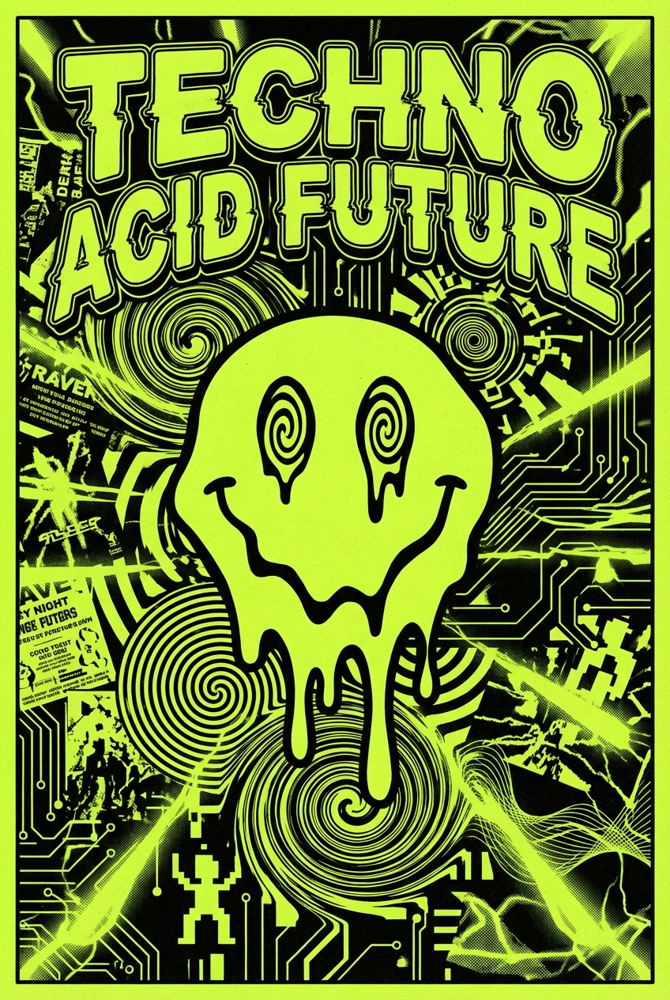
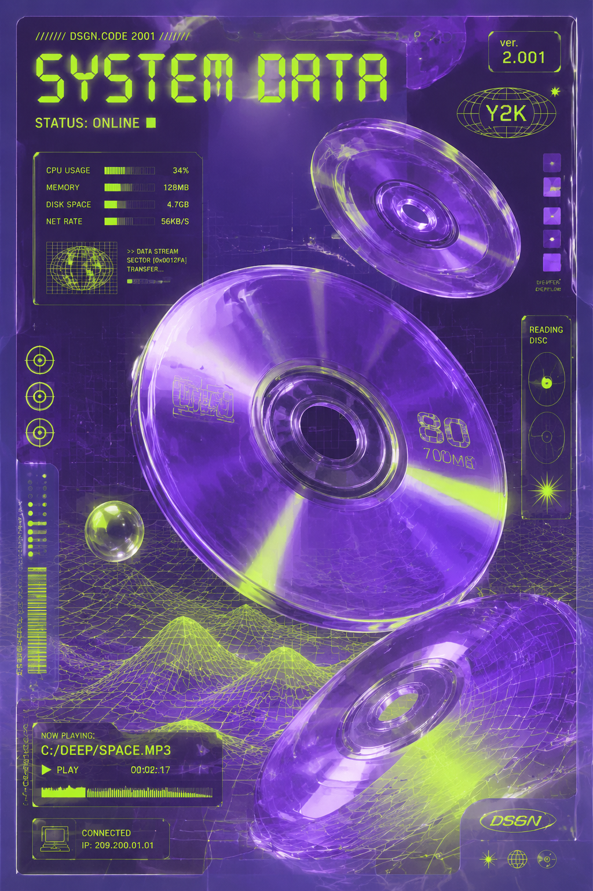

BudgetPixel AI
裝飾藝術海報：階梯金框與置中文字
BudgetPixel AI
幾層金色細線沿四角折成階梯和尖角，中間留大塊黑色，再用三行金字收緊焦點。
作者原提示詞 ↗
提示詞、設定與圖像授權
About this illustration/PNG → Prompt，同頁列明此原文生成該圖。
原作者模型／設定：Muse Image 1.0
原作是數位生成，不是金箔燙印。可見海報文字仍需自行校對。
圖像：Turn Your Can'ts Into Cans Poster · BudgetPixel AI · CC BY 4.0（圖像） · 授權依據。 原圖位元組未修改；依比例顯示。
poster.sh
夕色手寫字：粗細轉折與斜向字流
Eleven via poster.sh
大字的實線粗筆和細尾筆互相穿插；暖橘黃和紙面斑駁相連，小字在下面另成一段。
作者原提示詞 ↗
提示詞、設定與圖像授權
AI Prompt Details → Your Prompt；同頁標有創作日期、模型與授權。
原作者模型／設定：gemini-3.1-flash-image-preview
AI 模擬書寫，並非可直接用於排版的字型或書寫筆跡。日期是原頁 Created，不是上架日。
圖像：Hand Lettering Orange Expressive Illustration · Eleven via poster.sh · CC0 1.0（圖像） · 授權依據。 原圖位元組未改；依比例顯示。

poster.sh
漫畫封面：仰角屋頂、疾走黑影與標題區
poster.sh（system）
屋脊在底部斜切，奔躍黑影和紅色放射線佔中段；最上方白字大標題有獨立青色底座。
作者原提示詞 ↗
提示詞、設定與圖像授權
AI Prompt Details → Your Prompt；同頁標有創作日期、模型與授權。
原作者模型／設定：gemini-3-pro-image-preview
這是單幅漫畫封面，不是多格漫畫或真人照片。日期是原頁 Created，不是上架日。
圖像：Comic Book Vibrant Dynamic Low Angle Poster · poster.sh（system） · CC0 1.0（圖像） · 授權依據。 原圖位元組未改；依比例顯示。

poster.sh
酸性圖像海報：螢光雙色與變形中心
poster.sh（system）
黑和螢光萊姆高反差，融化笑臉中央最厚，四周螺旋線和細長裝飾提高密度，上方大字留出可讀輪廓。
作者原提示詞 ↗
提示詞、設定與圖像授權
AI Prompt Details → Your Prompt；同頁標有創作日期、模型與授權。
原作者模型／設定：gemini-3-pro-image-preview
這是生成的虛構舞會海報，不代表真實活動或打印出的螢光油墨。日期是原頁 Created，不是上架日。
圖像：Acid Graphics Neon 90s Club Poster Design · poster.sh（system） · CC0 1.0（圖像） · 授權依據。 原圖位元組未改；依比例顯示。

poster.sh
千禧科技海報：透明紫塑膠與線框網格
poster.sh（system）
大光碟斜放在中央，寬紫色反光分離薄片，同色細網格退到後景；萊姆綠像素字讓畫面看似電子儀表。
作者原提示詞 ↗
提示詞、設定與圖像授權
AI Prompt Details → Your Prompt；同頁標有創作日期、模型與授權。
原作者模型／設定：gpt-image-2
這是生成的平面海報，不是可編輯網格或 3D 模型；日期為原頁 Created，並非已核實的首刊日。
圖像：Digital Y2k Purple Translucent Art Design · poster.sh（system） · CC0 1.0（圖像） · 授權依據。 原圖位元組未改；依比例顯示。


.png){kind=link}

.png#Licensing){kind=link}


.webp){kind=link}